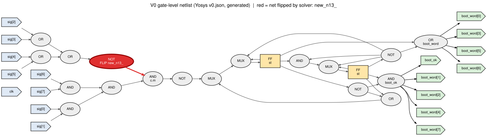
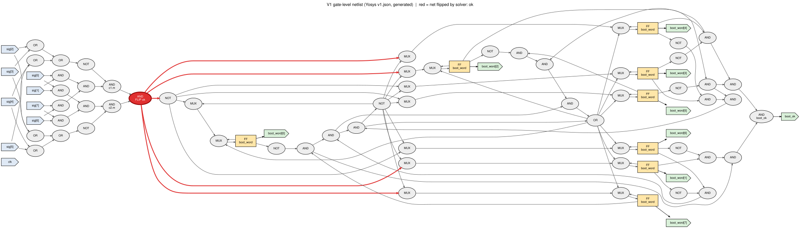
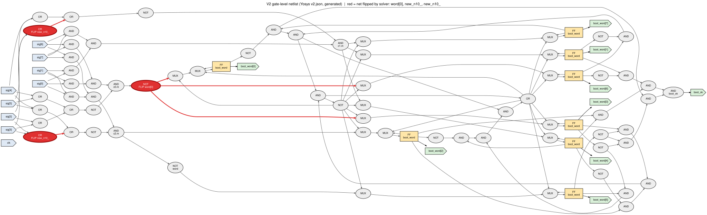

MEASURED-FROM-TOOL Not illustrative. Each graph is rendered by Graphviz dot from the Yosys JSON netlist the solver attacked (netlists/*.json). Boxes are flip-flops, ellipses are gates. Red marks the net(s) the SAT fault solver flipped.

new_n13_ (in the compare cone) at cycle 1.
ok. One flip of ok at cycle 1 breaks the duplicated-compare defence.
word[0], c1 new_n10_, c2 new_n10_ at cycle 1.